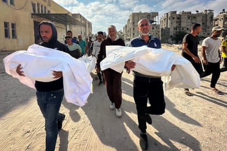
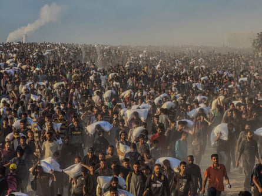
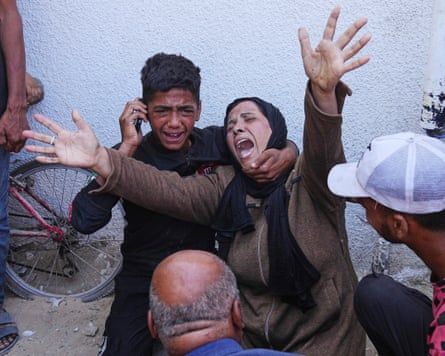
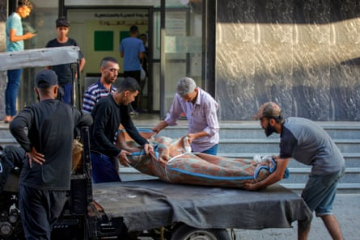
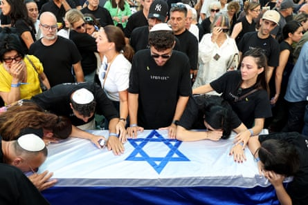
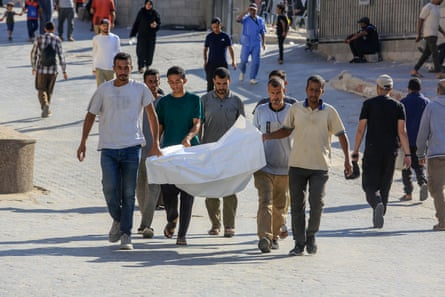

I n the weeks leading up to Israel’s war with Iran, which it launched on 13 June , there had been little let-up in its offensive in Gaza. A tenuous ceasefire had broken down in March, and a wave of airstrikes followed, as well as an 11-week blockade on all aid. Though some humanitarian assistance was allowed in from late May, military action intensified at the same time.
Growing numbers of desperate Palestinians were being killed as they sought scarce food either from looted aid convoys or from distribution hubs set up by the new, secretive Gaza Humanitarian Foundation, a group backed by Israel and the US as an alternative to the existing, much more comprehensive UN-led system. Rolling IDF “evacuation orders” covered much of the territory.
14 June
On the second day of the Israel-Iran conflict, at least 20 Palestinians were killed by Israeli strikes in Gaza, according to local health officials, and another 11 near food distribution points run by the GHF. Palestinian witnesses said Israeli forces fired on the crowds, while the Israeli military said it fired warning shots near people it described as suspects who approached its forces.
Footage filmed in Gaza City showed people pleading for food at a soup kitchen distribution point.
A day later, eight more Palestinians were killed as they sought aid.
16 June
Before dawn, Israeli troops opened fire on crowds of hungry Palestinians heading for two hubs managed by GHF. At least 37 people died, mainly while trying to reach the GHF centre near the southern city of Rafah, which has largely been razed by the Israeli military, and close to a second GHF site in central Gaza.
Most of the casualties were taken to the Nasser hospital, which received more than 300 injured people. More than 200 patients were take to a Red Cross field hospital – the highest number received by the facility in one single mass casualty incident to date.
17 June
On the bloodiest day for weeks in Gaza, witnesses described scenes like “a horror movie” after Israeli forces fired towards a crowd waiting for UN trucks loaded with flour near Khan Younis in the south, killing at least 59 Palestinians and injuring hundreds more.
Footage showed people carrying flour bags away from the scene before the IDF began shooting.
A short time later injured Palestinians were seen arriving at a hospital in Khan Younis.
Palestinians carry the bodies of loved ones killed when the IDF opened fire near Khan Younis on 17 June.Photograph: APAImages/Shutterstock
The incident led to a temporary suspension of such convoys, exacerbating an acute lack of food in the devastated territory. Fuel, clean water, medical supplies and much else is also in short supply, with dire humanitarian consequences. An Israeli military spokesperson said troops followed international law and took feasible precautions to mitigate civilian harm.
18 June
Once again, vast crowds gathered to “self-distribute” flour loaded on to aid convoys in central Gaza, and once again they were fired on by Israeli troops. Reports put the death toll at 11. A series of airstrikes killed at least 24 Palestinians, including a nine-year-old boy, who died in Al Bureij refugee camp.
Palestinians flocking to a food distribution site in northern Gaza City.Photograph: Habboub Ramez/ABACA/Shutterstock
19 June
Aid officials said an average of 23 UN trucks a day were entering Gaza through the main checkpoint of Kerem Shalom, but admitted most had been “self-distributed” by hungry Palestinians who stopped them, or were looted by organised gangs. Fifteen Palestinians waiting for aid were killed in central Gaza. Elsewhere, about 60 people were reported killed in a wave of airstrikes.
A Palestinian woman mourns the death of one of her children, who was killed in an Israeli military strike on 19 June.Photograph: Jehad Alshrafi/AP
20 June
New displacement orders issued by the Israeli military sent thousands fleeing eastern parts of Gaza City. Elsewhere, at least 24 people waiting for aid were killed by Israeli fire, according to local health authorities, in addition to other deaths by airstrikes.
A body wrapped in a blanket outside al-Awda hospital in Nuseirat.Photograph: AFP/Getty Images
Marwan Abu Nasser, the director of al-Awda hospital in the town of Nuseirat, said his staff had dealt with 21 injured and 24 dead people. “The injuries were extremely severe, most of them in the chest and head. There were women, children and young people among the injured,” Abu Nasser said.
This footage shows scenes from a funeral in held in Gaza on 20 June.
21 June
The Israeli military retrieved the bodies of three Israeli hostages from the Gaza Strip. All had been killed on 7 October 2023 during the Hamas raid into Israel that triggered the war. Fifty Israeli and foreign nationals remain captive in Gaza, more than half of whom are thought to be dead.
Mourners attend the funeral of Israeli hostage Jonathan Samerano at the Nahalat Yitzhak cemetery in Tel Aviv.Photograph: Jack Guez/AFP/Getty Images
23 June
Further displacement orders were issued by the Israeli military for parts of Khan Younis ahead of new operations. More than 80% of the territory in Gaza is now covered by such orders or held by Israeli troops. Israeli authorities said they had facilitated the entry of 430 trucks of humanitarian aid into Gaza over the previous seven days – a fraction of the 500 a day the UN estimate is needed.
Footage from Beit Lahiya in the far north of the territory showed people attempting to clamber on to aid trucks.
24 June
Another 25 Palestinians seeking aid were killed and dozens wounded when Israeli forces opened fire with bullets and tanks in Rafah, about 1.5 miles (2km) from a US-backed aid distribution point.
Relatives of people killed while waiting to access aid in Rafah transport a body from Nasser hospital for burial in Khan Younis.Photograph: Anadolu/Getty Images
Medics in Gaza said they also received casualties from a second incident near the Netzarim corridor, a strategic road that separates the northern third of the territory and is partially held by Israeli troops.
Seven Israeli soldiers were killed in a Hamas attack in southern Gaza, in one of the most lethal such incidents for many months. The soldiers died when militants planted a bomb on their armoured vehicle in Khan Younis.